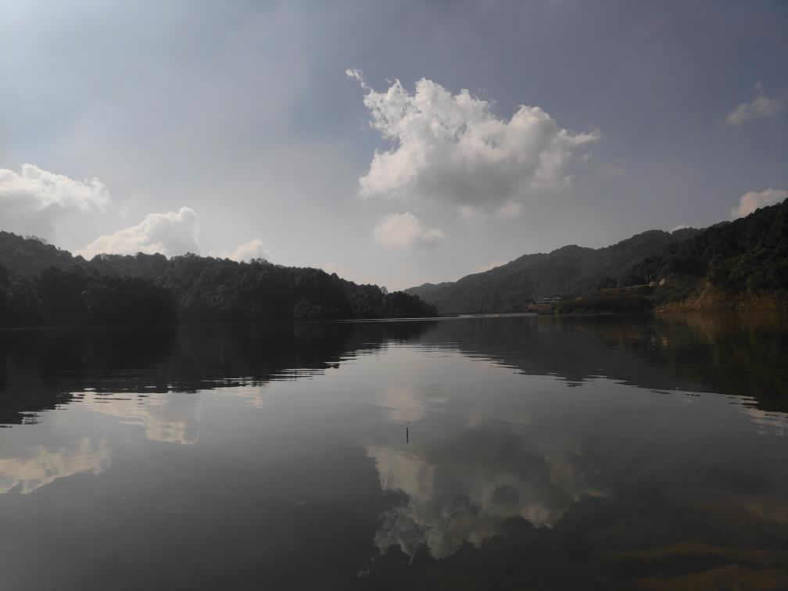
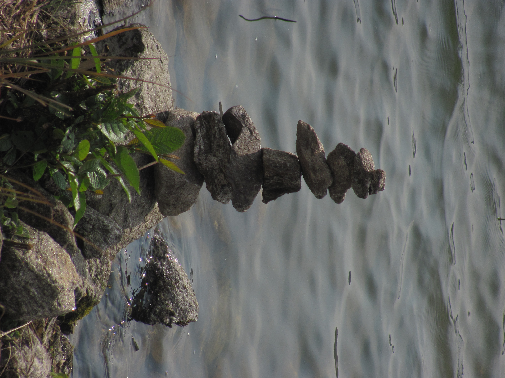
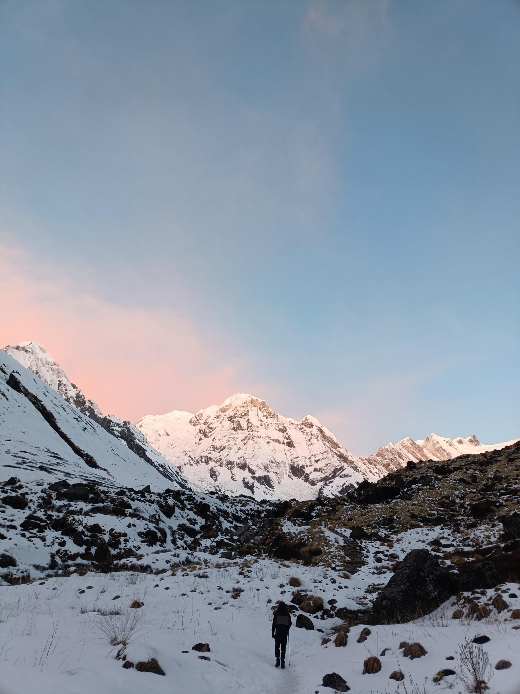

A Peaceful Dam
A peaceful view of the water, reeds, and trees.

A peaceful view of the water, reeds, and trees.

A close view of stone formations beside the water.

Mountain scenery illuminated by the evening sunlight.
